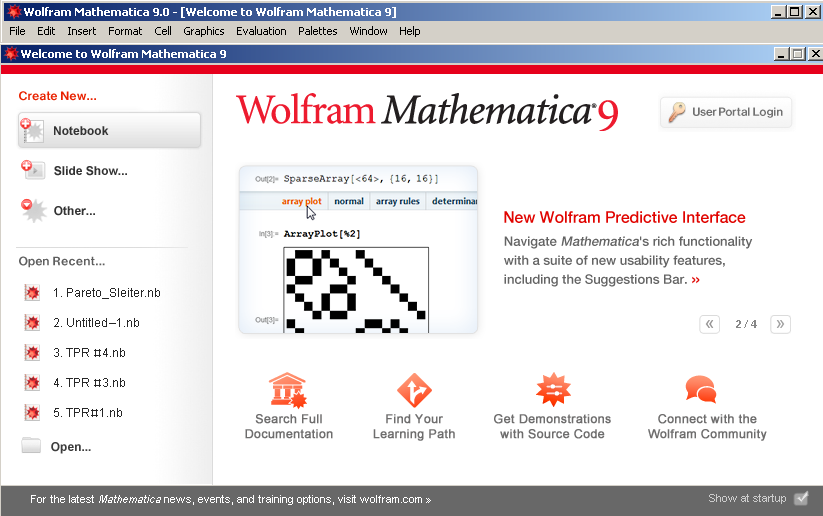
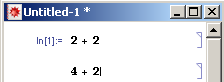

Урок 1
Можливості і структура Wolfram Mathematica
Wolfram Mathematica (далі WM) – це система комп’ютерної алгебри, що широко застосовується в наукових, інженерних, математичних і комп’ютерних областях. Вона включає в себе майже 5000 вбудованих функцій, що покривають всі області технічних розрахунків, дозволяє виконувати розрахунки не тільки в області математики, але й в областях нейронних мереж, машинного навчання, обробки зображень, теорії аналізу і обробки даних, візуалізації і багатьох інших. Завдяки використанню інтуїтивних назв функцій, що складаються з повних англійських слів, мова Wolfram дуже легко читається, зручно використовується і швидко вивчається.
Система WM є модульною і складається з ядра (Kernel) і інтерфейсу (Front End). Ядро виконує усі обчислення, а інтерфейс взаємодіє з користувачем.
Такий дизайн системи має кілька переваг над монолітною системою. Зокрема, інтерфейс системи може бути запущений на локальному комп’ютері з розширеними графічними можливостями, а ядро системи може бути запущене на швидкому віддаленому комп’ютері, або з одного інтерфейсу може бути запущено декілька ядер.
Інтерфейс блокнота є найбільш поширеним інтерфейсом при роботі з системою. Блокнот можна використовувати для виконання обчислень або як засіб для презентації чи публікації результатів цих обчислень.
Іншими поширеними інтерфейсами системи WM є текстовий інтерфейс (або інтерфейс командного рядка) і інтерфейс протоколу символічної передачі Wolfram (Wolfram Symbolic Transfer Protocol).
Текстовий інтерфейс надає доступ до більшої кількості функцій ядра WM, аніж інтерфейс блокноту, проте стають не доступними графічні можливості і динамічна інтерактивність.
Ми будемо працювати з інтерфейсом блокноту.
Початок роботи з інтерфейсом блокнота
Блокноти (Notebooks) – це структуровані інтерактивні документи системи WM, що складаються з послідовних секцій. Секція (cells) – базова структура блокноту WM, яка може містити текст, графіки, аудіо, вирази мовою Wolfram, динамічні інтерактивні елементи і т. п. Секції можуть бути вкладені одна в одну, утворюючи при цьому ієрархію. Завдяки цьому можна структурувати інформацію в блокнотах. Файли блокнотів мають розширення .nb.
Для запуску інтерфейсу блокнота відкрийте меню Пуск-Всі програми- Wolfram Mathematica і виберіть Wolfram Mathematica 9.
Відкриються два вікна: панель меню і вікно привітання.
Закрийте вікно привітання і відкрийте новий блокнот, перейшовши у меню File-New і вибравши Notebook (.nb), або використайте комбінацію клавіш Ctrl+N.
Відкриється новий, пустий по замовчуванню, блокнот з мигаючим горизонтальним курсором і довгою сірою горизонтальною лінією. Лінія і курсор позначають місце, в якому буде створена нова секція. Введіть якийсь арифметичний вираз, наприклад 2 + 2. Після введення першого символу курсор стане вертикальним, а в правій стороні блокноту появиться квадратна дужка, яка показує обсяг секції.
По замовчуванню нові секції мають стиль Input, тобто вміст такої секції інтерпретується як команда, що може бути оброблена ядром WM. Натисніть комбінацію клавіш Shift+Enter, щоб відправити вираз ядру WM на обробку. При наявності цифрової клавіатури можна скористатися цифровою клавішею Enter замість комбінації Shift+Enter.
Після того, як ви відправите вираз, WM позначить секцію з відправленим виразом надписом In[n]:=, де n – номер, який визначає коли вираз оброблявся ядром WM (у даному випадку n = 1, оскільки це перший вираз).
Ядро обробить вираз і відправить назад деякий результат. Інтерфейс блокноту створить нову секцію зі стилем Output, помістить туди отриманий результат і позначить її як Out[n]:= (у даному випадку n = 1). По замовчуванню, вхідна-вихідна секція групується у окрему секцію.
Більшість отримуваних результатів можуть бути відредаговані. Змініть вихідну секцію, наприклад 4 + 2.
Як видно з рисунку, після редагування вихідної секції, вона автоматично змінюється на вхідну і виходить з автоматично створеної групи секцій. Натисність Shift+Enter.
Створюється вихідна секція для результату і вона об’єднується з вхідною у групу.
Вхідні секції у вашому блокноті можуть бути розміщені у довільному порядку. Ви завжди можете повернутись до попередньої секції і відправити її на обробку заново. Вихідна секція завжди розміщується під вхідною.
Необхідно розуміти, що номер n у позначеннях секцій In[n]:=, Out[n]:= позначає не позицію секції в блокноті, а коли секція була оброблена ядром WM. Якщо одна секція розміщена у вашому блокноті вище за іншу, це не означає, що вона була оброблена раніше. Потрібно порівнювати їх номера – та секція, номер котрої менший, оброблена раніше.
Відправте на обробку вираз 2 + 2 на початку блокноту.
Як ви можете переконатись, вираз 2 + 2 розміщений вище, але був оброблений пізніше, тому номер його секції більший за номер секції виразу, розміщеного нижче.
Кожна секція в блокноті повинна мати певний стиль, який визначає її роль. Ми вже розібрали два стилі секцій: Input і Output які призначаються секціям автоматично. На цей раз ми створимо секцію зі стилем Text. Виберіть місце вставки нової секції, переміщаючи вказівник миші у вікні блокноту доки він не стане горизонтальним.
Після цього натисніть ліву кнопку миші і ви побачите уже знайомий мигаючий горизонтальний курсор з довгою горизонтальною лінією.
Виберіть пункт меню Format-Style-Text або скористайтеся комбінацією Alt+7.
Введіть текст: "Сума чисел 4 і 2."
Як видно, стиль цієї секції відрізняється від інших. Якщо нажати Shift+Enter то вона не буде відправлена ядру WM на обробку, оскільки стиль Text призначений лише для читання. Натомість буде добавлено новий рядок.

Щоб змінити стиль секції, необхідно натиснути на дужці секції лівою клавішею миші, і вибрати новий стиль в меню Format-Style. Змінимо стиль секції на Code.
Змінимо фоновий колір секції Format-Background Color-Light Orange.

В меню Format можна також змінити шрифт, колір, розмір та інші параметри відображення секції.
Як було зазначено на початку, секція може містити інші секції. Така секція називається групою. Секції, що містить група, називаються секціями групи. Процес утворення групи називається групуванням, а її знищення – розгрупуванням. Ми вже зустрічалися з групами, а також групуванням і розгрупуванням на прикладі вхідної і вихідної секцій вище. Обсяг групи, як і звичайної секції, також зображений квадратною дужкою у правій частині блокноту. Зауважимо, що дужка групи містить у собі дужки секцій цієї групи, що наглядно показує, які секції належать цій групі. З попереднього рисунку видно, що у нас є три секції, дві з яких є групами. Кожна з груп містить дві секції.
До цих пір, групування і розгрупування відбувалось автоматично, але ми можемо виконувати це самостійно.
Для утворення групи необхідно виділити дужки секцій лівою клавішею миші, потім натиснути по виділенню правою клавішею миші, і вибрати пункт Group Cells як зображено на малюнку.
Таким чином буде створена нова група.
Для знищення групи, необхідно виділити її дужку, відкрити контекстне меню правою клавішею миші, і вибрати Ungroup cells.
Пункт меню Merge Cells зливає вибрані секції в одну секцію.
Група може бути відкритою або закритою. На рисунку вище вона є відкритою, оскільки ми бачимо вміст усіх секцій групи. Коли група закрита, ми бачимо вміст лише однієї секції групи. По замовчуванню, це перша секція групи.
Двічі клацніть по дужці групи.
Група закриється і буде відображатися лише перша секція групи. Знову двічі клацніть по цій дужці, щоб відкрити групу.
Щоб залишити видимою секцію, відмінну від першої, двічі клацніть по дужці цієї секції.
Можна також залишити видимими кілька секцій групи. Для цього виділіть дужки цих секцій утримуючи клавішу Ctrl.
І двічі клацніть по дужці останньої виділеної секції.
Ви могли замітити, що дужка закритої групи відображається з трикутними прапорцями (стрілками). За напрямом цих трикутників можна визначити розміщення відкритої секції у групі. Стрілка догори вказує що вище є невидимі секції, донизу – невидимі секції є нижче. Таким чином, якщо навпроти секції стоїть лише стрілка догори, то це остання секція групи, донизу – перша секція групи, а якщо обидві – секція не є ні першою, ні останньою.